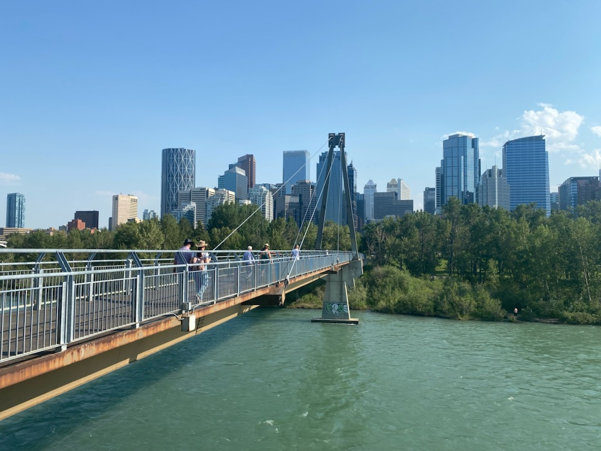
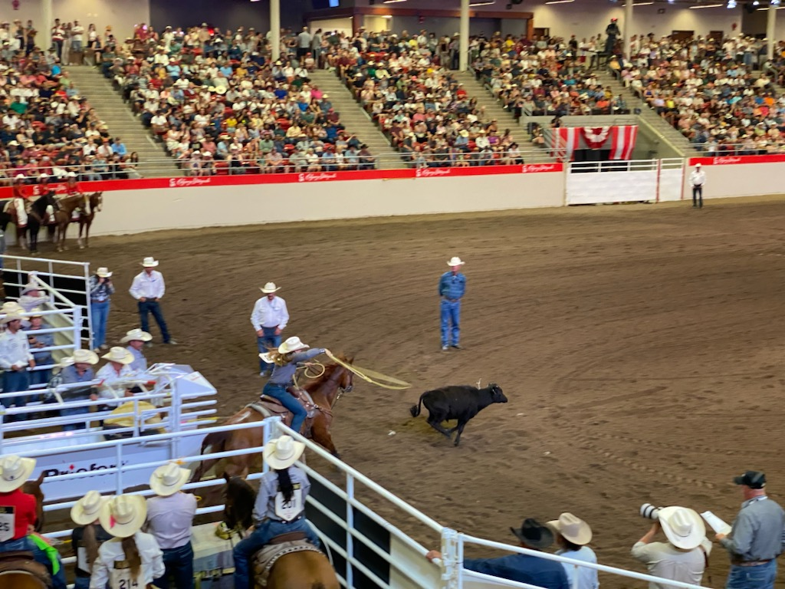
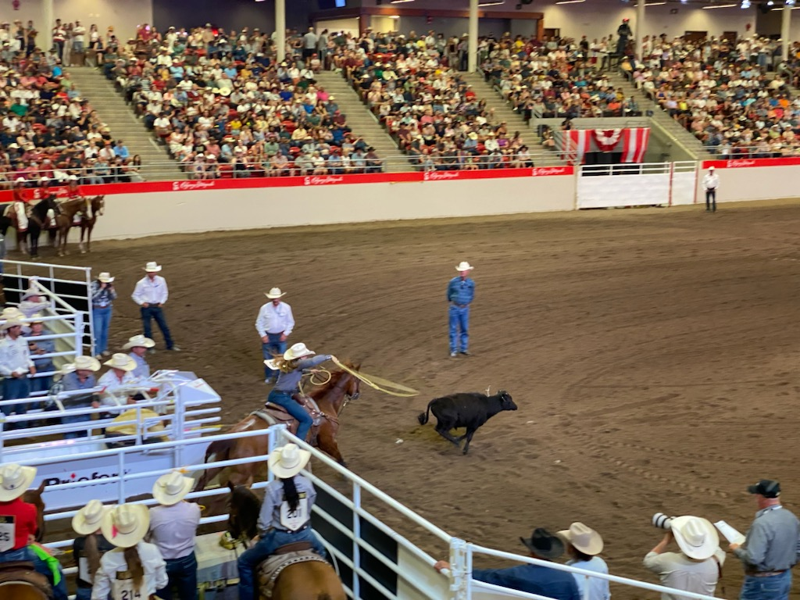

Calgary
When we arrived in Calgary, we went out for dinner at a place where we could watch the football match between Argentina and Canada in the semifinals. After dinner, we walked down Bow River and then went home. The apartment we stayed at gave us access to a gym, which my brother and I used before going to bed. On our first day in Calgary, we went to the Calgary Stampede. We first walked around outside and checked out a lot of the exhibits there. There was everything from military vehicles to teepees, but it eventually got way too hot. We went into the big market inside to look around. I eventually found something I liked—a bamboo sword from a show I watch. There were a lot of shows happening there; we went to the Tie-Down Roping show, which was very fun to watch, but we had to leave halfway through the show because we had tickets to the rodeo. The rodeo was very overwhelming; there was a lot going on at every moment. It didn’t help that there was a kid behind us screaming all the time. Other than that, it was okay. I personally would not go to watch it again, but it was still worth seeing at least once. We left halfway through because it was just too much. The next day, we visited my mom and dad’s old college. There wasn’t much to do there, but surprisingly, there were a lot of people there even though it was during a break. What was also surprising was that we could just walk around the school and campus even though we don’t go there. After we had explored the campus, we headed back to our apartment and chilled there for the rest of the day. The next day, we headed to the airport to fly to Vancouver. Unfortunately for my dad, he had to drive the car all the way, which was around an 11-hour drive.
 
